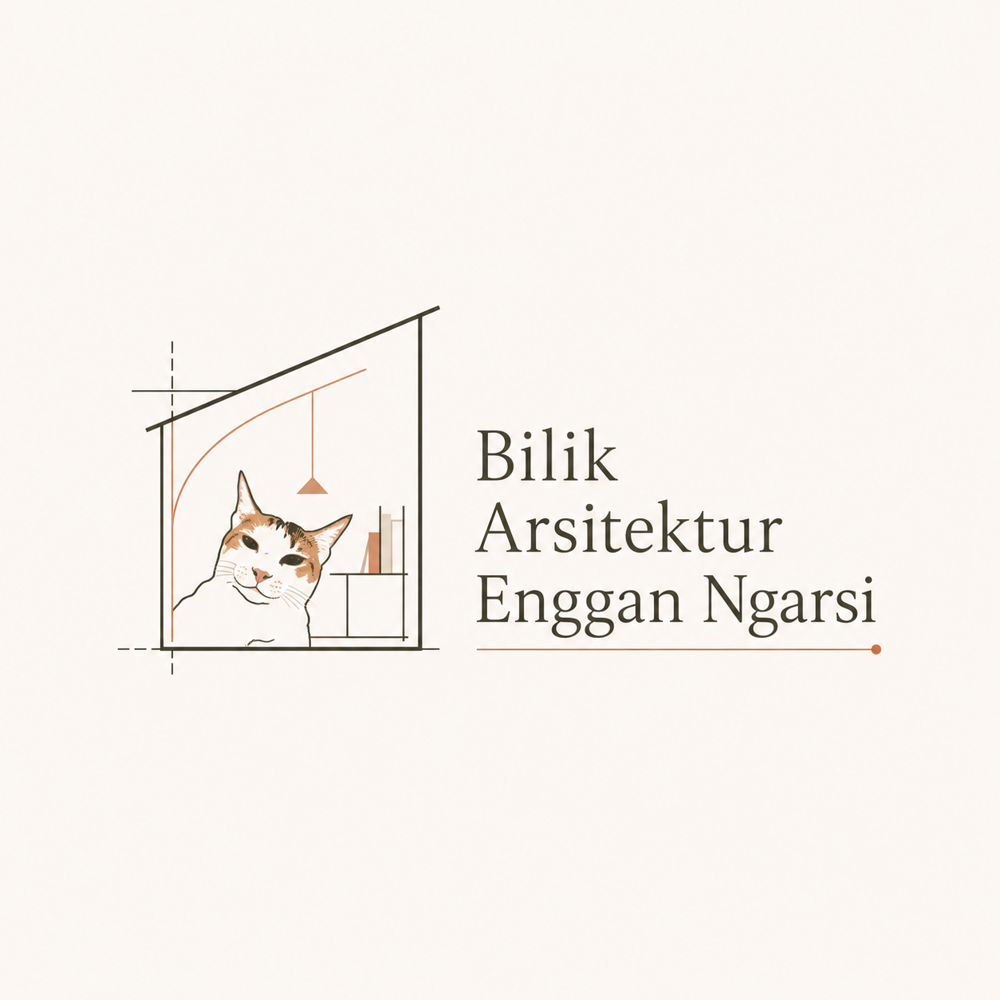

Ruang & Fungsi
Hitung luas ruang, okupansi, allowance sirkulasi, dan rasio net-to-gross.

Aplikasi kalkulator arsitektur untuk studi awal ruang, skala gambar, zonasi, tangga, ramp, struktur konseptual, kuantitas material, RAB, dan referensi ergonomi.
Hitung luas ruang, okupansi, allowance sirkulasi, dan rasio net-to-gross.
Konversi skala/unit serta hitung KDB, KLB, KDH, dan data tapak awal.
Estimasi konseptual balok, kolom, pondasi, kuantitas material, dan biaya awal.
ArchiCalc Guide adalah alat bantu perhitungan awal. Hasil aplikasi bukan pengganti persetujuan pemerintah daerah, desain struktur, desain MEP, atau perhitungan profesional.